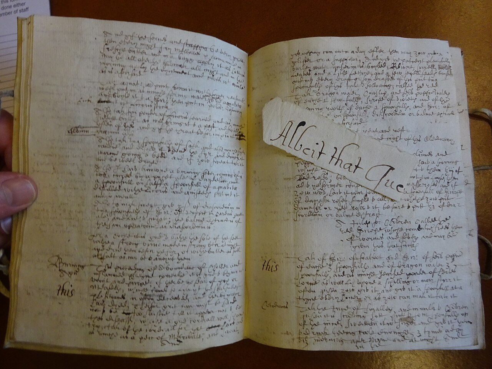
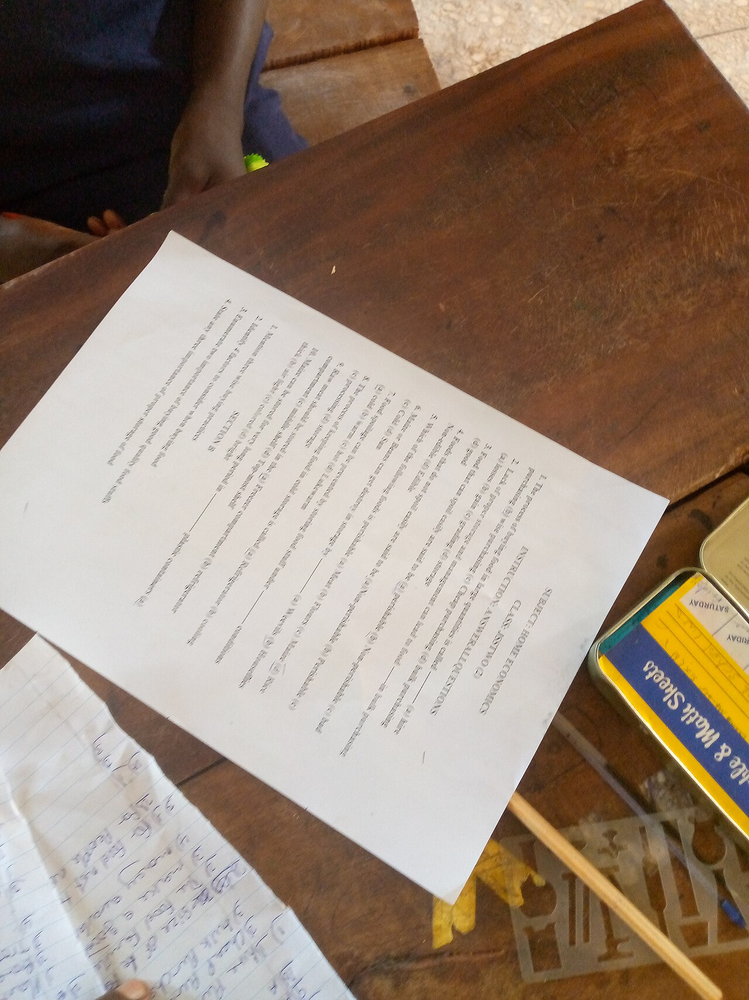

지시는 친절한 부탁문이 아니라 결과를 판정할 수 있게 만드는 작업 계약이다. 계약을 역할 · 과업 · 형식 · 제약 네 부품으로 나누어 읽으면, 답이 갈렸을 때 어느 약속이 비었는지를 찾을 수 있다.
지시를 한두 문장 바꾸어 본 경험은 누구에게나 있지만, 달라진 결과를 보고 어느 문장이 효과를 냈는지까지 아는 경우는 드뭅니다. 그래서 잘 나온 한 번의 답을 다른 입력에 재현하지 못하고, 잘못된 답에는 규칙을 여러 개 덧붙인 뒤 무엇이 원인이었는지도 잃어버립니다.
손글씨 레시피를 처음 보는 사람이 수프를 끓인다고 해봅시다. "맛있게 만들어 주세요"만 적힌 쪽은 재료를 얼마나 넣을지, 어느 순서로 끓일지, 언제 완성으로 볼지 알 수 없습니다. 좋은 레시피는 재료를 먼저 세고, 분량을 적고, 손질과 가열 순서를 나누며, 멈출 조건도 남깁니다.

| 빈 부품 | 실제로 나타나는 장면 | 고칠 방향 |
|---|---|---|
| 역할 | "배송 지연을 설명해 주세요" → 내부 운영 회의용 원인 분석·물류 지표·재발 방지안이 길게 나옵니다. 상담원이 바로 복사해 보낼 문장이 필요했는데 확인되지 않은 보상 약속까지 섞입니다 | 독자와 책임을 함께 고정합니다 |
| 과업 | "당신은 프로젝트 관리자입니다"만 주면 자기소개나 일반 조언을 늘어놓습니다. 회의록에 "이 내용을 처리해 주세요"만 주면 요약·감상·할 일·질문 중 하나를 임의로 고릅니다 | 수행 동사 · 사용할 입력 · 완료 판정으로 씁니다 |
| 형식 | 같은 행동 항목이 첫 실행은 표, 둘째는 산문, 셋째는 번호 목록으로 옵니다. 근거 문장이 있다가 없다가 하면 오류를 검토할 자리도 사라집니다 | 필드 · 허용값 · 빈값 표현을 정합니다 |
| 제약 | 계약서에 해지일이 없는데 "친절하게 안내해 주세요"만 주면 통상 절차를 바탕으로 특정 날짜와 환불액을 자연스럽게 추정합니다. 문장은 매끄럽지만 고객의 권리와 금액을 바꿉니다 | 모른다는 상태를 허용된 출력으로 만듭니다 |
조건이 많은 지시는 견고해 보이지만, 실패가 났을 때 고칠 위치를 모르게 합니다. 먼저 과업에 필요한 최소 계약을 쓰고, 같은 대표 입력으로 실행한 뒤 하나씩 보강합니다.
동료에게 주문 기록, 문의, 지시문만 건네고 "반환할 값, 사용 가능한 근거, 모를 때의 행동"을 말해 보라고 합니다. 동료가 서로 다른 범주를 고르거나 확인되지 않은 금액을 말해야 한다고 이해한다면, 모델 실행 전에 계약이 충분히 좁혀지지 않은 것입니다.
로컬 모델 qwen3.5:2b에 같은 질문을 여러 방식으로 보낸 기록입니다. 설명으로 받아들이지 않고 직접 관찰합니다.
| 관찰 대상 | 조건 | 실측 결과 |
|---|---|---|
| 계산 | 기본 / 역할+단계별 검산 / 예시 | 모두 정답 321 · 297자 / 952자 / 153자 |
| 형식 | 기본 질문 (한국의 3대 강) | 661자 산문 |
| 형식 | JSON 배열로만 요청 | 63자, 파싱 성공, 내용에 "물류강" 포함 |
| 형식 | 한 문장으로 요청 | 82자, 내용 환각 포함 |
| 길이 | 기본 / 30자 이내 / 500자 이상 | 1903자 / 96자 / 995자 |
| 부정 지시 | 요약에서 "AI" 금지, 3회 | 3회 모두 미사용 |
| 함정 | 9.11 vs 9.9, temperature 0, 3회 | 3회 모두 동일한 오답 "9월 11일" |
| 함정 | 같은 질문, temperature 1.5, 3회 | 1/3회만 정답 9.9 |
["한강","낙동강","물류강"]은 JSON 규칙에 맞아 파싱은 성공합니다. 그러나 "물류강"은 존재하지 않는 강입니다. 모델은 요청한 모양을 지켰고, 동시에 내용에서는 틀렸습니다.같은 함정 질문 "9.11과 9.9 중 어느 쪽이 더 큰가요?"(정답 9.9)에 열한 가지 방법을 적용한 기록입니다.
| 방법 | 판정 | 비고 |
|---|---|---|
| zero-shot (think:false) | 정답 | 215자 |
| 역할 부여(수학 교사) | 정답 | thinking 8,178자 |
| CoT(단계별 요청) | 정답 | thinking 4,765자 |
| few-shot(비교 예시 2개) | 정답 | thinking 없이 |
| Self-Consistency(3풀이 다수결) | 정답 | 1,646자로 가장 김 |
| 부정 지시("소수점" 금지) | 오답 | 9/11이라는 분수로 재해석 |
| JSON 형식 강제 | 오답 | thinking 10,833자 뒤 응답 소진 |
| temperature 0 / 1.5 | 오답 / 무효 | 0은 오답 재현, 1.5는 뒤죽박죽 |
모델은 후보마다 logit이라는 날 점수를 냅니다. logit은 확률이 아니고 음수일 수도 있으며 합해도 1이 되지 않습니다. softmax가 이를 0~1 사이로 정규화해 확률 분포로 만듭니다.
base LM은 대규모 텍스트에서 다음 단어를 예측하도록 사전학습한 모델입니다. 문장을 그럴듯하게 잇는 능력은 있어도 사용자의 의도, 안전한 거절, 원하는 형식을 자동으로 우선하지는 않습니다.
| 단계 | 학습 신호 | 바뀌는 행동 | 오해하면 안 될 것 |
|---|---|---|---|
| 사전학습 | 다음 토큰 예측 | 언어 규칙과 지식 패턴을 이어 씀 | 업무 절차나 안전 경계가 자동 보장되지 않음 |
| SFT 지도 미세조정 | 사람이 만든 지시-모범응답 쌍 | 요청 형식과 과업 수행의 기본 습관 | 예시에 없던 경계 입력까지 정확해졌다는 증거는 아님 |
| 선호 학습 | 두 응답 중 나은 쪽을 고른 비교 | 말투·거절·유용성의 경향 | 모델의 선호가 제품 정책이나 법적 판단을 대신하지 않음 |
| 대화 템플릿 | 역할 토큰과 메시지 순서 | system·developer·user 구획을 읽는 방식 | 같은 문장을 다른 위치에 넣어도 항상 같은 효과는 아님 |
chat template은 화면의 역할 라벨이 아니라, 메시지 목록을 모델이 학습 때 보았던 특수 토큰 열로 바꾸는 규약입니다. 평문으로 역할명을 흉내 내거나 다른 모델의 제어 토큰을 섞으면, 자연어 내용이 같아도 모델에는 낯선 입력이 됩니다.
| 둔 위치 | 적절한 쓰임 |
|---|---|
| system | 모든 고객지원 흐름에 지속되는 안전 경계 |
| developer | 주문 조회 절차와 출력 필드를 정하는 제품 계약 |
| user | 이번 문의에서 배송일을 묻고 주문번호가 없음을 알리는 요청 |
위계는 출처를 구분하는 설계 원칙이지, 모든 모델이 모든 길이의 문맥에서 완벽히 수행한다는 치료제가 아닙니다. 긴 문서의 반복된 명령, 모호한 인용 경계, 여러 차례의 대화 이력은 모델이 어느 문장을 규칙으로 읽는지 흔들 수 있습니다.
2023년 6월 22일 미국 뉴욕 남부연방지방법원은 원고 측 변호사들이 제출한 서면에 존재하지 않는 판례 인용이 포함됐다고 판단하고 5,000달러의 제재를 명했습니다. 결정문은 변호사들이 ChatGPT로 조사한 뒤에도 인용의 정확성을 확인하지 않았다고 설명합니다.
기법은 모델을 더 똑똑하게 만드는 주문이 아니라 같은 과업에서 바꿀 수 있는 실행 조건의 가설입니다. "few-shot이 좋다"보다 먼저 어떤 실패를 줄일 것으로 예상하는지와 무엇을 고정한 채 비교할지를 정합니다.
| 기법 | 기준선 | 변경 조건 | 성공 지표 | 기각 조건 |
|---|---|---|---|---|
| few-shot | 예시 없이 분류 | 경계 사례 예시 3개 | 경계 사례의 정확한 범주 비율 | 정확도 변화 없이 비용만 늘어남 |
| 역할 | 역할 없이 답변 | 확인된 주문 사실만 쓰는 지원 담당자 | 근거 없는 확정과 고객 비난의 감소 | 같은 입력에서 판정이 개선되지 않음 |
| CoT | 최종 답만 요청 | 단계적 풀이 또는 검증 요청 | 최종 정답과 근거 일치 | 그럴듯한 단계만 늘고 정답은 그대로 |
"차근차근 생각해 주세요"라는 문구가 모델 내부의 thinking budget과 같은 뜻이라고 가정할 수 없습니다. 일부 제품은 effort 같은 별도 설정으로 추론 자원을 조절하고, 어떤 제품은 내부 사고를 노출하지 않거나 문구에 다르게 반응합니다.
같은 고객 문의를 세 지시로 실행하기 전에, 무엇을 성공으로 셀지부터 기준표로 만듭니다. 결과를 본 뒤에 기준을 만들면 자연스럽게 마음에 드는 결과의 표현을 성공 조건으로 삼게 됩니다.
| 실행 전 채점 기준 | 통과의 이진 정의 |
|---|---|
| 근거 없는 날짜 금지 | 입력에 없는 배송일·주문 상태·운송장 번호를 확정적으로 쓰지 않았습니다 |
| 부족한 정보 처리 | 확정할 수 없다고 밝히고 확인할 정보 한 가지를 요청했습니다 |
| 고객용 문체 | 비난하거나 전문 용어만 나열하지 않고 정중한 한국어로 답했습니다 |
| 형식 준수 | C안은 reply·question 두 키를 가진 JSON 객체만 냈고 두 값이 비어 있지 않습니다 |
[A] 고객 문의에 답변 초안을 작성하라.
[B] 고객 문의에 정중한 한국어 답변 초안을 작성하라.
입력에 없는 배송일, 주문 상태, 운송장 번호는 추정하거나 단정하지 말라.
정보가 부족하면 확인에 필요한 정보 한 가지를 요청하라.
[C] B안의 지시를 따른다. 아래 JSON 객체만 출력하라.
{"reply":"고객에게 보낼 답변","question":"추가로 확인할 정보 한 가지"}
두 값은 한국어 문자열이며 비워 둘 수 없다.
| 경로 | 되는 것 | 주의할 점 |
|---|---|---|
| Claude Agent SDK | 구독 로그인 + system_prompt + 비동기 user 생성기 | 범용 messages 배열 API가 아닙니다 |
| LangChain + Gemini | API 키 + SystemMessage·HumanMessage 목록을 invoke()에 | 공급자 고유 설정이 추상화에 가려질 수 있고, 503은 지시 실패가 아닙니다 |
| Ollama | 인증 없이 role 딕셔너리 목록을 chat()에 | 로컬 실행이 품질을 보장하지 않습니다 |
"행동 항목과 담당자, 기한을 알려 주세요"라고만 하면 민수가 맡습니다 / 담당자: 민수 / 확인 필요가 섞여 나올 수 있습니다. 사람은 뜻을 짐작해도 프로그램은 같은 칸에 넣을 값을 판정할 수 없고, 기한이 빠진 것이 미확정인지 모델의 누락인지도 알 수 없습니다.
{
"type": "object",
"required": ["items"],
"properties": {
"items": { "type": "array", "items": {
"type": "object",
"required": ["task", "owner", "due_date", "evidence"],
"properties": {
"task": {"type": "string"},
"owner": {"type": ["string", "null"]},
"due_date": {"type": ["string", "null"]},
"evidence": {"type": "string"}
}
}}
}
}
evidence는 판단의 근거 문장을 담는 필드입니다.| validator가 잡는 것 | validator가 못 잡는 것 |
|---|---|
| 쉼표가 빠진 객체, 없는 필수 필드, 문자열 자리에 들어간 배열, 허용하지 않은 추가 필드 | 그 evidence 문자열이 회의록에 실제로 있는지, 인용이 주장을 뒷받침하는지, "금요일"이 이번 주인지, 담당자를 지어내지 않았는지 |

| 지표 | 무엇을 재나 | 어디에 쓰나 | 못 재는 것 |
|---|---|---|---|
| 이진 판정 exact match | 정한 조건을 지키면 1, 아니면 0 | 선택지 분류, 고정 레이블, 짧고 유일한 추출, 정형 JSON | 표현만 다른 옳은 자유 답을 0점으로. 사실성 자체를 못 잼 |
| F1 | 정밀도와 재현율의 조화평균 | 개체·키워드 추출, 다중 레이블 — 답이 항목 집합일 때 | 누락이 위험한지 오탐이 위험한지를 숨김 |
| BLEU | 참조와 n-gram 중첩, 주로 정밀도 관점 | 번역 — 참조 번역이 있을 때 보조 지표 | 다른 어순·동의어에 낮은 점수. 사실성 증명이 아님 |
| ROUGE | 참조 요약의 조각을 얼마나 포착했나, 재현율 관점 | 문서·회의 요약 | 길게 쓰면 재현율을 부풀림. 사실 오류를 못 봄 |
| perplexity | 다음 토큰에 준 확률 — 모델의 놀람 | 같은 모델·토크나이저의 언어모델링 적합도 | 프롬프트 품질 비교에 부적합. 확신하는 답이 옳은 답은 아님 |
| pass@k | 후보 k개 중 적어도 하나가 테스트를 통과할 확률 | 코드·SQL — 실행해 검증 가능한 과업 | 불완전한 테스트를 통과한 코드가 요구 전체를 만족한다는 보장 없음 |
| LLM-as-judge | rubric으로 다른 모델의 열린 답을 채점 | 참조 답이 없는 유용성·문체·추론·사실성 | 순서 편향, 장황한 답 선호, 자기 모델 계열 선호 |
| 먼저 묻는 질문 | 예라면 고를 1차 지표 | 반드시 함께 기록할 것 |
|---|---|---|
| 정답이 하나의 고정 레이블 또는 객체입니까? | 이진 판정 · exact match | 정규화 규칙, 필수 필드, 금지 조건 |
| 정답이 여러 항목의 집합입니까? | F1 | 정밀도·재현율, 매칭 규칙, 평균 방식 |
| 참조 번역 또는 참조 요약이 있습니까? | 번역은 BLEU, 요약은 ROUGE | 참조 수, 토큰화, 사람 표본 검토 |
| 실행할 수 있는 코드입니까? | pass@k와 테스트 | k, 샘플링, 테스트 커버리지 |
| 참조 답 없이 열린 품질을 봅니까? | rubric 기반 LLM-as-judge | 심사 모델, 순서 무작위화, 사람 검토 |
| 같은 모델의 언어모델링 적합도를 봅니까? | perplexity | 토크나이저, 코퍼스, 문맥 창 |
지시 하나가 어떤 입력에서는 잘 작동하고 다른 입력에서는 무너지는 일은 예외가 아닙니다. 그때 "답이 나빴다"라고만 적고 지시 전체를 다시 쓰면, 무엇을 고쳤고 어느 부품 때문에 결과가 달라졌는지 알 수 없습니다.
| 유형 | 결과 원문에서 보이는 증상 | 최소 변경 처방 |
|---|---|---|
| 모호함 | 같은 표현을 다르게 해석하거나, 입력이 비면 임의 추정과 질문이 섞임 | 모호한 낱말 하나를 판정 규칙으로 바꾸고, 모르면 할 행동 하나를 지정 |
| 과잉 | 조건이 서로 싸우거나 답이 불필요하게 길어지고 핵심을 놓침 | 관측된 실패와 무관한 조건 하나를 빼고 우선순위를 명시 |
| 누락 | 필수 항목, 예외 처리, 빈값, 근거가 빠짐 | 빠진 항목 하나를 required 또는 완료 조건으로 더하고 빈값 표현을 정함 |
| 충돌 | 지시와 자료, 상위 규칙과 예시가 서로 다른 행동을 요구 | 충돌한 두 문장을 분리하고 어느 출처가 우선인지 한 규칙으로 |
| 형식 드리프트 | 설명문이 섞이고 필드 이름·순서·자료형이 흔들리며 파서가 멈춤 | 스키마로 정하고 validator로 형식만 별도 검사 |
신입에게 "지난달 고객 불만을 요약해 임원에게 보고하세요"라고 말했을 때, 신입은 범위·기준일·임원의 관심사·원문 접근 권한이 불명확하면 되물을 수 있습니다. 조직의 관행을 아는 동료는 빠진 조건을 알아차리고, 잘못 보낸 보고서에는 책임 소재와 수정 경로도 남습니다.
question 빈칸도 필수 필드가 빠졌다면 누락이고, 질문할 정보가 주문번호인지 운송장 번호인지 정하지 않았다면 모호함입니다. 판별의 목적은 딱지 하나를 붙이는 일이 아니라 수정 가능한 문장을 고르기 위해 질문의 순서를 정하는 일입니다.실패한 답을 보면 역할·제약·예시·스키마·모델까지 한꺼번에 바꾸고 싶어집니다. 그러나 전부 고친 결과가 좋아져도 어느 변경이 효과를 냈는지 알 수 없고, 더 나빠져도 어느 조건이 충돌했는지 찾지 못합니다.
| 변경 번호 | 고정한 조건 | 딱 한 변경 | 판정 변화 |
|---|---|---|---|
| 01 | B안 · 같은 입력 · 같은 모델 · 같은 기준 | 날짜 추정 금지 문장 추가 | 안전: 실패 → 통과 / 변화 없음 |
| 02 | 01의 통과 조건 전부 | question 비우지 않기 추가 | 형식: 실패 → 통과 / 변화 없음 |
| 설정 | 무엇에 관한 계약인가 | 보장하지 않는 것 |
|---|---|---|
| temperature | 결과의 무작위성 | 낮은 값이 근거 없는 날짜를 금지하지 않음 |
| top_p | 열어 둘 후보군의 폭 | 바꿔도 JSON 필드가 채워지거나 근거가 생기지 않음 |
| effort | 배정할 추론 노력의 예산 | 비어 있는 주문 정보나 모순된 조건을 스스로 해소하지 않음 |
지시는 빈 모델 위에 규칙을 새로 쓰는 코드가 아닙니다. 최소안에도 정중한 답이 나올 수 있는 까닭은 모델이 그 문장을 충실히 따랐다는 증명이라기보다 넓은 학습 분포에서 익힌 응답 성향이 작동했을 가능성이 있기 때문입니다.
{kind=link}
ee.jpg){kind=link}
{kind=link}